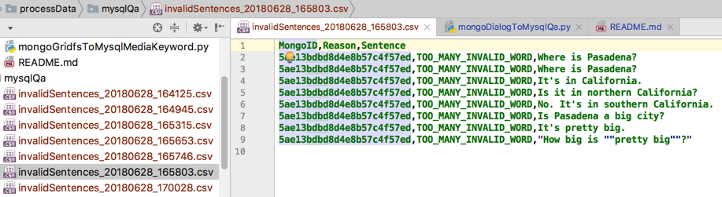
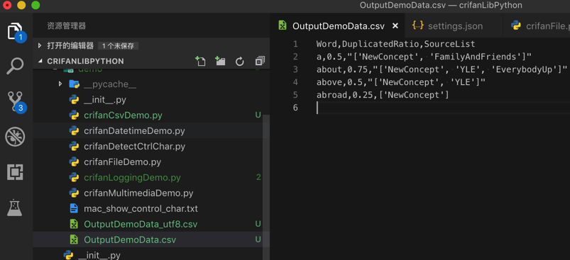
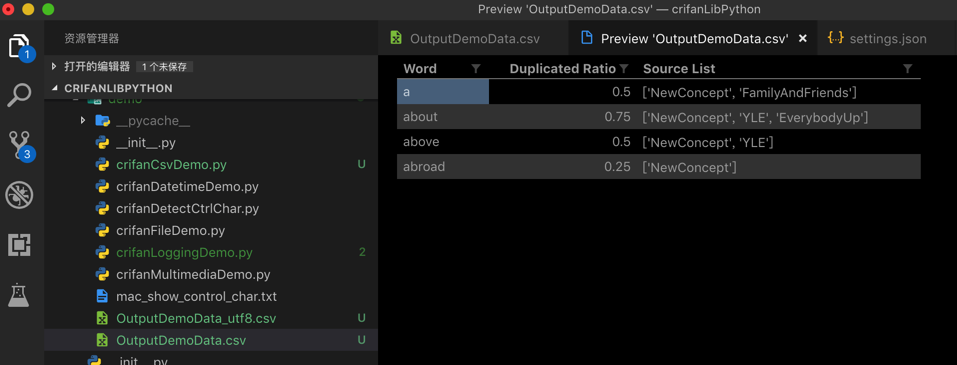
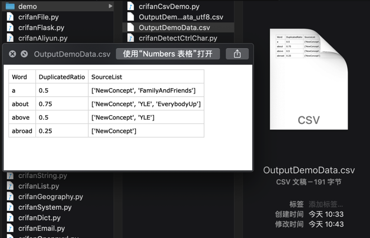

处理csv
已把csv处理相关代码，整理成独立函数。
最新代码详见：
下面分别介绍：
python读取csv文件
核心代码loadCsvFromFile：
import codecs
import csv
with codecs.open(csvFilePath, "r", encoding="utf-8") as csvFp:
csvReader = csv.reader(csvFp)
csvHeaders = next(csvReader) # <class 'list'>: ['url', '品牌', '子品牌', '车型', '车系']
for eachRowList in csvReader:
print("eachRowList=%s" % eachRowList)
# eachRowList=['https://car.autohome.com.cn/pic/series-s19501/3548.html#pvareaid=2042220', 'Elemental', 'Elemental', '2014款 基本型', 'Elemental RP1']
已封装成函数：
def loadCsvFromFile(csvFilePath, fileEncoding="utf-8", isReturnDictList=True):
"""read data from csv file
Args:
csvFilePath (str): full csv file path
fileEncoding (str): file encoding, default to 'utf-8'
isReturnDictList (bool): return data is row dict list or tuple(header list, row list list)
Returns:
isReturnDictList=True -> csv row dict list
isReturnDictList=False -> (csv header list, csv row data list)
Raises:
"""
csvDictList = []
csvHeaderList = []
csvRowListList = []
with codecs.open(csvFilePath, "r", encoding=fileEncoding) as csvFp:
csvReader = csv.reader(csvFp)
csvHeaderList = next(csvReader)
print("csvHeaderList=%s" % csvHeaderList)
# <class 'list'>: ['url', '品牌', '子品牌', '车型', '车系']
# ['appName', 'pkgName', 'authorName', 'categoryName', 'appDownCount', 'apkUrl', 'detailUrl', 'searchKeyword']
for eachRowList in csvReader:
# print("eachRowList=%s" % eachRowList)
# eachRowList=['https://car.autohome.com.cn/pic/series-s19501/3548.html#pvareaid=2042220', 'Elemental', 'Elemental', '2014款 基本型', 'Elemental RP1']
# eachRowList=['传奇世界手游', 'com.tencent.cqsj', '盛大游戏', '网络游戏', '2577672', 'https://imtt.dd.qq.com/16891/apk/6B6261E845EB53DF06F6DFBE884B61C8.apk?fsname=com.tencent.cqsj_3.6.1.20_3006.apk&csr=1bbd', 'https://sj.qq.com/myapp/detail.htm?apkName=com.tencent.cqsj', '传奇']
csvRowListList.append(eachRowList)
if isReturnDictList:
for eachRowList in csvRowListList:
curRowDict = {}
for curIdx, curHeader in enumerate(csvHeaderList):
curRowValue = eachRowList[curIdx]
curRowDict[curHeader] = curRowValue
csvDictList.append(curRowDict)
return csvDictList
else:
return csvHeaderList, csvRowListList
调用：
resultRowDictList = loadCsvFromFile(InputYingYongBaoSearchResultFullPath)
新建=写入 csv文件
rowValueList = [mongoId, invalidReason.name, sentence]
with codecs.open(gCurInvalidSentenceFullFilename, "a", encoding="utf-8") as csvFp:
csvListWriter = csv.writer(csvFp)
csvListWriter.writerow(rowValueList)
或：用dict去保存值（需要指定header）
gInvalidSentenceCsvHeaders = [‘MongoID’, ‘Reason’, ‘Sentence’]
rowDict = {
"MongoID": mongoId,
# "Reason": str(invalidReason),
"Reason": invalidReason.name,
"Sentence": sentence
}
with codecs.open(gCurInvalidSentenceFullFilename, "a", encoding="utf-8") as csvFp:
csvDictWriter = csv.DictWriter(csvFp, fieldnames=gInvalidSentenceCsvHeaders)
csvDictWriter.writerow(rowDict)
效果：

saveToCsvByDictList和saveToCsvByHeaderAndList
后来已封装成独立函数
代码：
import codecs
import csv
def saveToCsvByDictList(csvDictList, outputFilePath):
# generate csv headers from dict list
firstItemDict = csvDictList[0]
csvHeaders = list(firstItemDict.keys())
with codecs.open(outputFilePath, "w", "UTF-8") as outCsvFp:
csvDictWriter = csv.DictWriter(outCsvFp, fieldnames=csvHeaders)
# write header by inner function from fieldnames
csvDictWriter.writeheader()
for eachRowDict in csvDictList:
csvDictWriter.writerow(eachRowDict)
def saveToCsvByHeaderAndList(csvHeaderList, csvRowListList, outputFilePath):
with codecs.open(outputFilePath, "w", "UTF-8") as outCsvFp:
csvWriter = csv.writer(outCsvFp)
# write header from list
csvWriter.writerow(csvHeaderList)
# type1: write each row
# for eachRowList in csvRowListList:
# csvWriter.writerow(eachRowList)
# type2: write all rows
csvWriter.writerows(csvRowListList)
writeheader是后来新增的
writeheader()：是python 2.7和Python 3.2之后才新增的
- 当然也可以自己写：
dw.writerow( dict((f,f) for f in dr.fieldnames) ) output.writerow(dict(zip(dr.fieldnames, dr.fieldnames))) - 其实官方库的内部也是类似的实现
header = dict(zip(self.fieldnames, self.fieldnames)) self.writerow(header)
调用举例：
文件：crifanLib/demo/crifanCsvDemo.py
OutputFilenameByHeaderAndList = "OutputDemoData_ByHeaderAndList.csv"
OutputFilenameByDictList = "OutputDemoData_ByDictList.csv"
OutputCsvHeader = ["单词", "重复频率", "来源列表"]
curFile = os.path.abspath(__file__)
curFolder = os.path.dirname(curFile)
DemoRowListList = [
["a", 0.5, ['NewConcept', 'FamilyAndFriends']],
["about", 0.75, ['NewConcept', 'YLE', 'EverybodyUp']],
["above", 0.5, ['NewConcept', 'YLE']],
["abroad", 0.25, ['NewConcept']]
]
DemoDictList = [
{
"单词": "a",
"重复频率": 0.5,
"来源列表": ['NewConcept', 'FamilyAndFriends'],
},
{
"单词": "about",
"重复频率": 0.75,
"来源列表": ['NewConcept', 'YLE', 'EverybodyUp'],
},
{
"单词": "above",
"重复频率": 0.5,
"来源列表": ['NewConcept', 'YLE'],
},
{
"单词": "abroad",
"重复频率": 0.25,
"来源列表": ['NewConcept'],
},
]
def demoCsvOutput():
# Demo1: save by list of each row item list
fullFilePathByHeaderAndList = os.path.join(curFolder, OutputFilenameByHeaderAndList)
saveToCsvByHeaderAndList(OutputCsvHeader, DemoRowListList, fullFilePathByHeaderAndList)
# Demo1: save by list of dict, not need assign header
fullFilePathByDictList = os.path.join(curFolder, OutputFilenameByDictList)
saveToCsvByDictList(DemoDictList, fullFilePathByDictList)
"""
单词,重复频率,来源列表
a,0.5,"['NewConcept', 'FamilyAndFriends']"
about,0.75,"['NewConcept', 'YLE', 'EverybodyUp']"
above,0.5,"['NewConcept', 'YLE']"
abroad,0.25,['NewConcept']
"""
输出csv文件效果：

csv（作为表格文件的）预览效果：

Mac中自带的预览的csv的效果：
